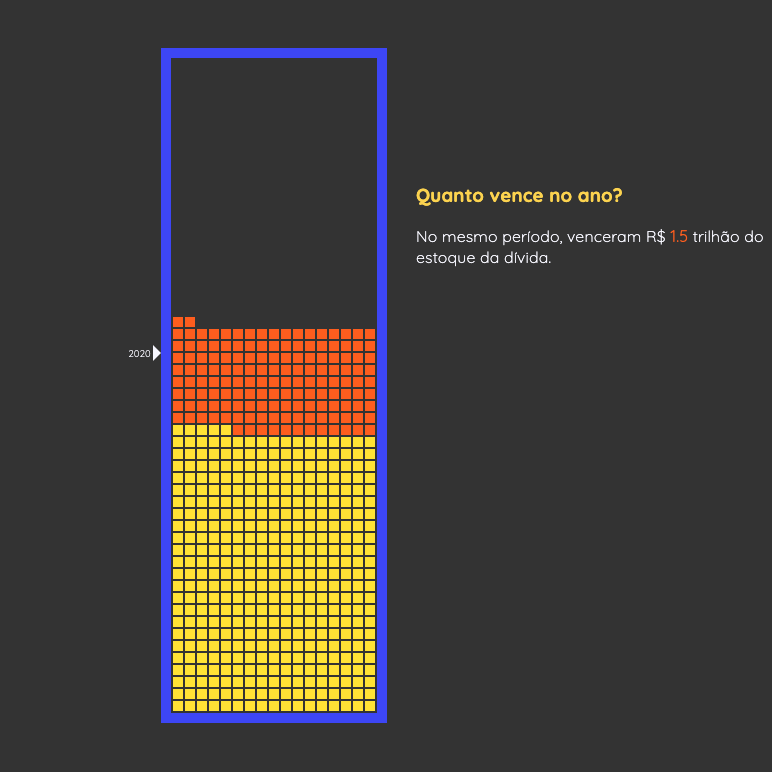
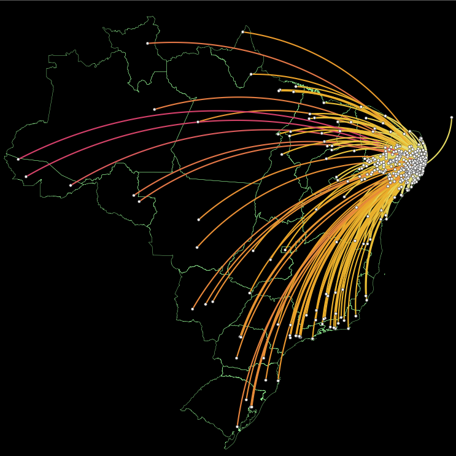
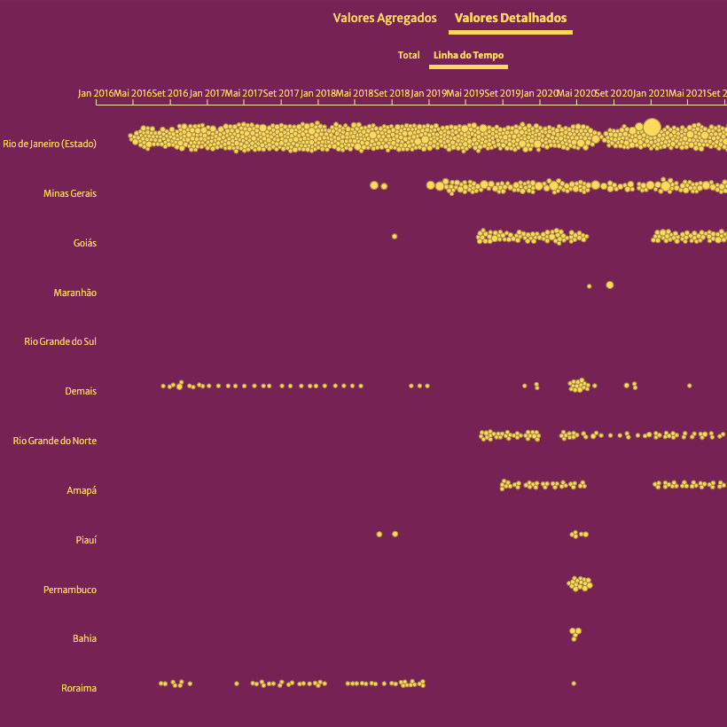
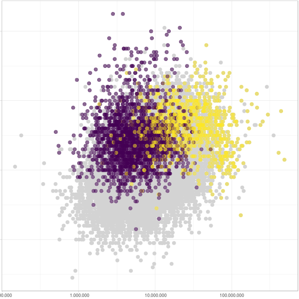
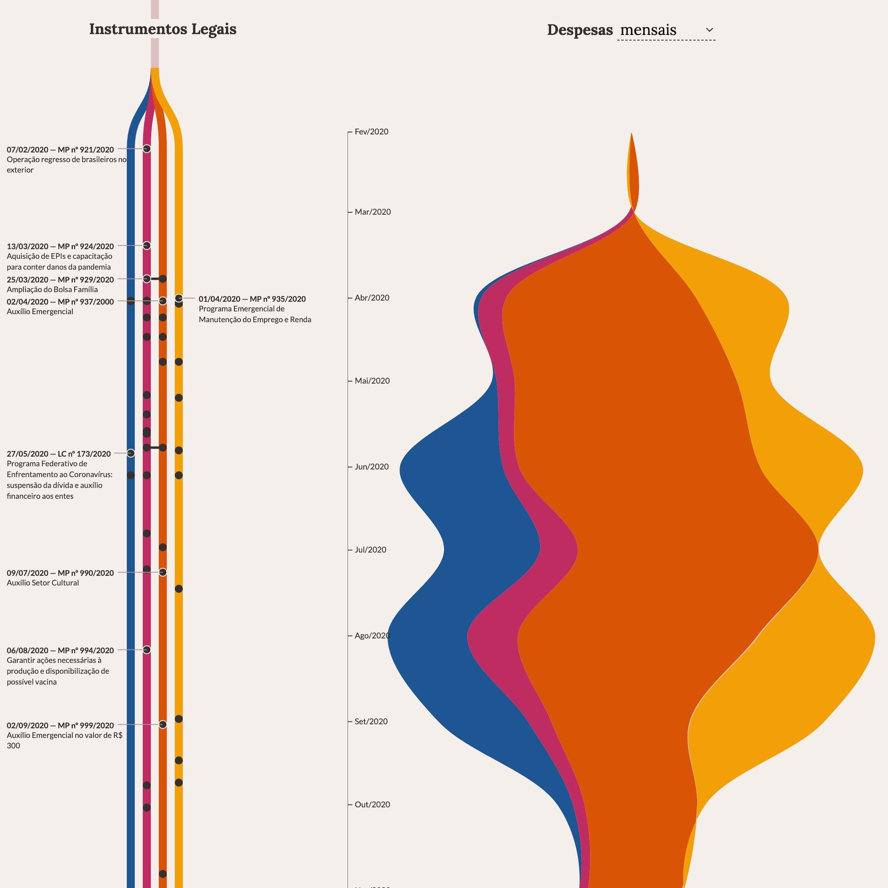

Projetos
Grupo de Comunicação Estratégica e
Análise de Dados do Tesouro Nacional
Repo

A dinâmica da Dívida Pública
Uma descrição bem legal
Repo
O relatório bimestral
Repo

Deslocamentos e gastos hospitalares dos municípios
Repo

Painel de honras de garantias

Despesas com Educação e Ideb
Repo

Ação do governo em resposta à Pandemia de Covid-19